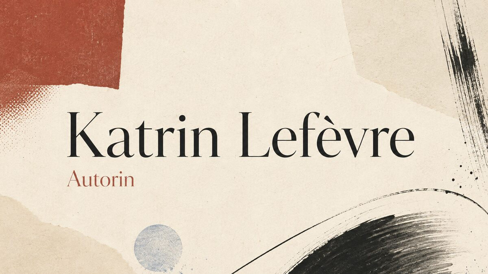

Autorin
KatrinLefèvre
Ich schreibe über Menschen, Nähe und Distanz – und über die gesellschaftlichen Fragen, die im Alltag oft ganz leise beginnen.
Kontakt aufnehmen
02Über mich
Schreiben
Mich interessieren die Zwischentöne.
Ich schreibe zeitgenössische Literatur über Zugehörigkeit, Beziehungen und die kleinen Entscheidungen, die größere Bewegungen auslösen. Im Mittelpunkt stehen Menschen – widersprüchlich, suchend und nie nur eine einzige Geschichte.
Mein Romanprojekt
Sie möchten mehr über mein Buch erfahren?
Für Leseanfragen, persönlichen Austausch oder weitere Informationen freue ich mich über eine Nachricht.
Kontaktadresse ergänzen